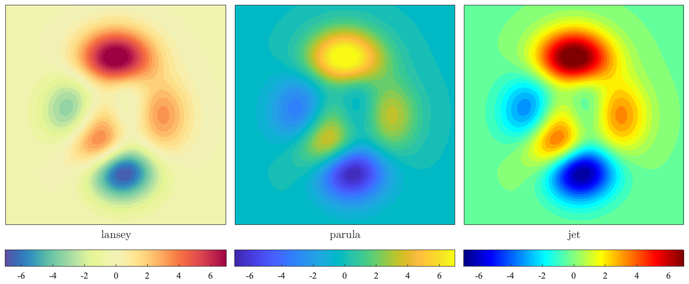

LANSEY The Lansey modification of Cynthia Brewer's "Spectral" colormap. __________________________________________________________________  __________________________________________________________________ LANSEY(M) returns an M-by-3 matrix containing the Lansey colormap. LANSEY with no arguments returns a colormap having the same number of colors as the colormap of the current figure. This colormap is Jonathan Lansey's modification of the 11-division version of Cynthia Brewer's "Spectral" colormap. LINSPECER itself is available from http://www.mathworks.com/matlabcentral/fileexchange/42673. This product includes color specifications and designs developed by Cynthia Brewer (http://colorbrewer.org/). LANSEY is a simplified version of LINSPECER by Jonathan Lansey, modified and redistributed in accordance with the copyright policies of LINSPECER and ColorBrewer.org, see LANSEY_COPYRIGHT for details. To make LANSEY your default colormap, add to your startup.m file the line "set(0,'DefaultFigureColormap',lansey)". 'lansey --f' generates the figure shown above. Usage: h=lansey(M); colormap lansey __________________________________________________________________ This is part of JLAB --- type 'help jlab' for more information (C) 2015 J.M. Lilly --- type 'help jlab_license' for details